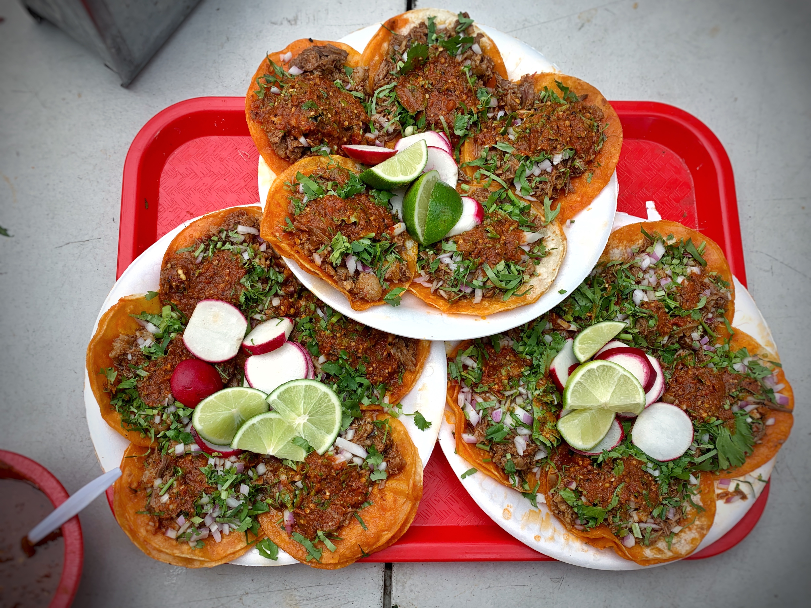

Birria Tacos

Description
Birria tacos are a flavorful Mexican dish featuring tender, braised meat (traditionally goat, but also beef, lamb, or chicken) in a rich, spicy broth, often made with guajillo and ancho chiles. The meat is then folded into a soft corn tortilla with fresh chopped onions and cilantro, and frequently enjoyed with a side of the flavorful consommé (broth). This creates a rich, savory, and satisfying taco that's a popular street food and restaurant staple.
Ingredients
Birria Tacos Ingredients:
Meat:
- 2-3 lbs beef chuck or short ribs, or a combination
Dried Chiles:
- 5-6 guajillo, 3 ancho, 2 chile de arbol (or a similar combination)
Spices:
- Ground cumin, coriander, oregano, black peppercorns, cinnamon, cloves
Aromatics:
- 2 yellow onions, sliced, 5 garlic cloves, sliced
Broth:
- 32 oz beef stock or broth
Other:
- Olive oil, apple cider vinegar, salt, pepper, optional chipotle peppers in adobo
Tacos:
- Corn tortillas, shredded cheese (Oaxaca, Monterey Jack, or Mexican blend), chopped cilantro, diced onion, lemon or lime wedges
Consomme Ingredients:
Braising Liquid:
- From cooking the birria meat
Additional Chiles:
- (Same as for the meat, or use a smaller amount)
Spices:
- Cumin, coriander, oregano
Aromatics
- Onion, garlic
Vinegar
- Apple cider vinegar or white vinegar
Steps
Prepare Birria
- Toast and Reconstitute Dried Chiles: Dried chiles like guajillo and ancho are key to the birria sauce. Toast them in a dry skillet over medium heat for a few minutes until fragrant, being careful not to burn them. Then, soak them in hot water to soften.
- Brown the Meat: Season your beef (such as chuck roast) with salt and pepper. Sear the meat in a large pot or Dutch oven until browned on all sides.
- Make the Sauce: In the same pot, cook ingredients like onion, garlic, tomatoes, and spices. Deglaze the pan with broth or water to scrape up any flavorful bits. Blend the cooked vegetables, spices, and rehydrated chiles into a smooth sauce. You can strain the sauce if you want a smoother texture.
- Braise the Meat: Return the browned meat to the pot and pour the blended sauce over it. Add bay leaves and simmer until the meat is fork-tender and easily shreds. This can take a few hours or be done using a slow cooker or Instant Pot.
Shred Birria and Prepare Consomme
- Shred the Meat: Once cooked, remove the meat from the braising liquid and shred it using two forks. Discard any bones, excess fat, or gristle.
- Consomé: The flavorful liquid left after braising the meat is your consomé. You can serve it as is or add ingredients like chicken broth, diced carrots, celery, and cabbage to create a richer consomé. Simmer for about 20 minutes until the vegetables are tender.
- Strain the Consomé (Optional): For a smoother consomé, strain the liquid to remove any solids.
Assemble Tacos
- Prepare Tortillas: Heat a griddle or skillet over medium heat. Dip corn tortillas into the warm consomé, ensuring they are well coated.
- Fill the Tacos: Place the dipped tortillas on the hot griddle. Add shredded cheese (like Oaxaca) and shredded birria meat to one half of each tortilla.
- Cook Until Crispy: Fold the tortillas in half and cook on both sides until golden brown and crispy.
Serve
- Serve with Consomé: Serve the birria tacos with small bowls of warm consomé for dipping.
- Garnish: Garnish with fresh diced white onion, chopped cilantro, and lime wedges.
Want to go back to the Homepage? Click here